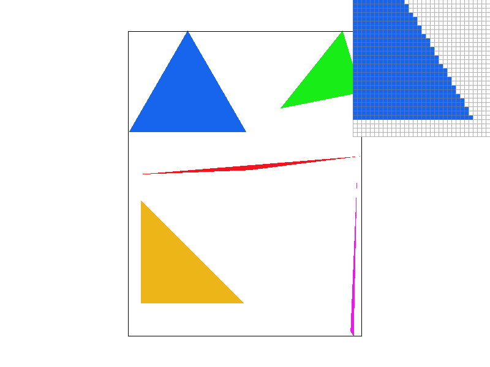
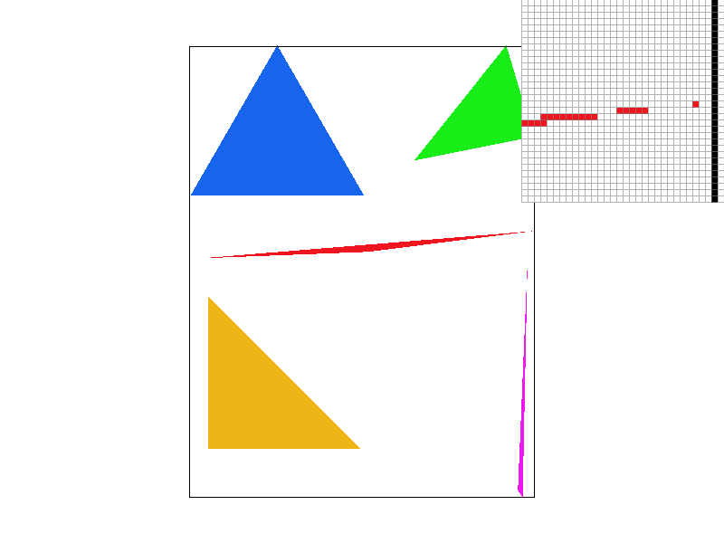
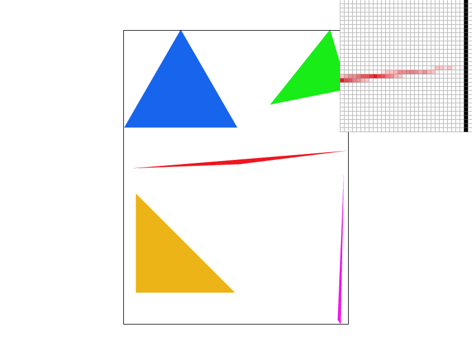
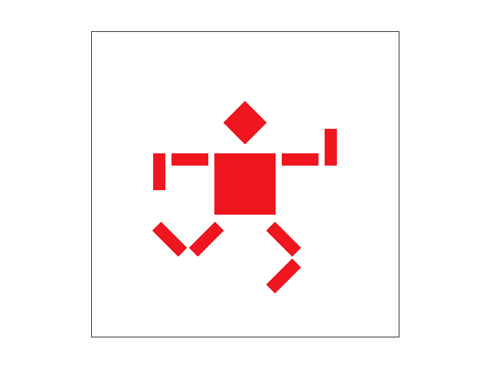
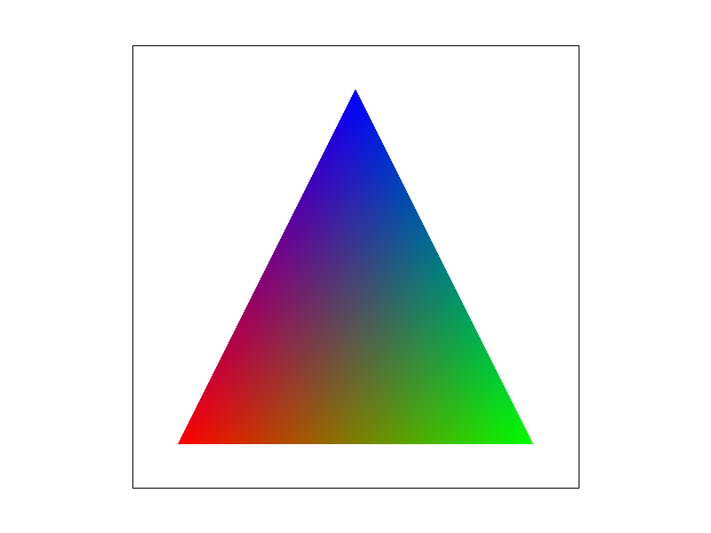
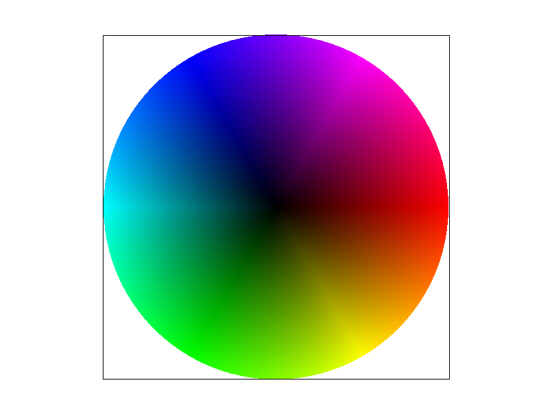
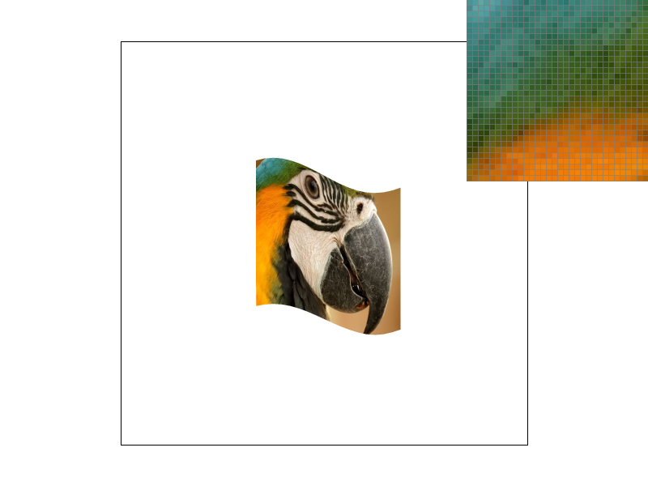
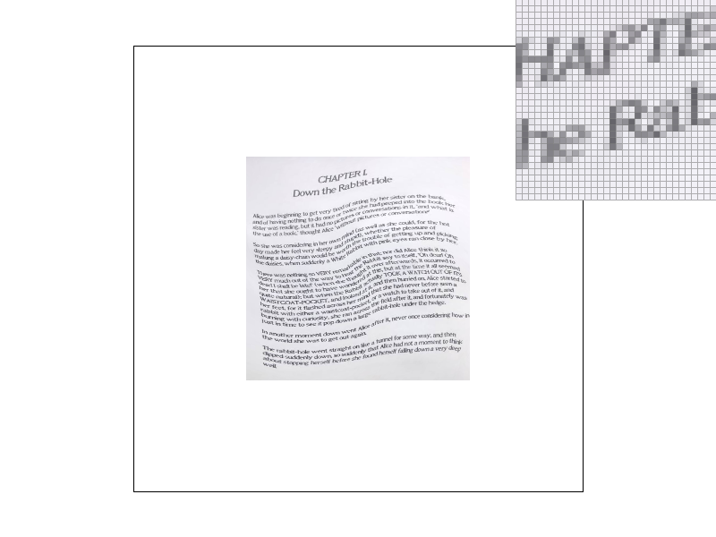
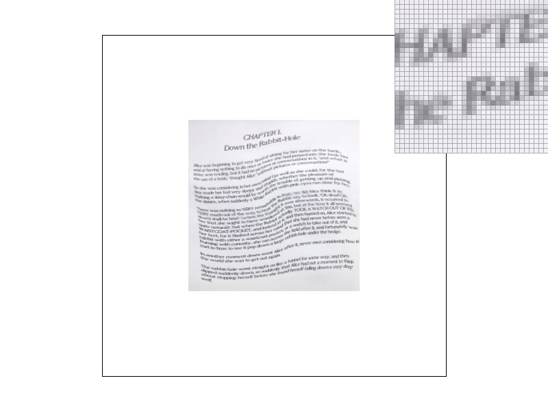

CS184/284A Fall 2026 Homework 1 Write-Up
Names: Ria Jain
Link to webpage:
cal-cs184-student.github.io/hw1-hw0-rj-writeup
Link to GitHub repository:
github.com/cal-cs184-student/hw1-hw0-rj
Overview
This homework implements a rasterizer. It accepts an SVG as input, and as output provides a framebuffer. Task 1 implements the logic for detemrining which pixels a triangle covers by testing the pixel center against the half-planes that make up a triangle, which can help tell if a pixel is inside a triangle or not. Task 2 helps address the problem of aliasing due an insufficient sampling frequency, adding lofic to instead test a grid of samples inside each pixel. Task 3 adds transforms like translation, scaling, and rotation. Task 4 adds support for barycentric weights so that pixels can be colored from vertices of different colors. Finally, tasks 5 and 6 put textures on triangles. Nearest and bilinear sampling read the full-resolution image. Mipmaps add smaller, pre-averaged copies, so a pixel that covers many texels reads a matching level instead of skipping texels.
One of the most interesting parts of the assignments was seeing how aliasing comes up, and how there are different fixes that trade off memory usage, complexity and computational cost, and effectiveness of solution. It was especially cool to see side by side examples of solutions on various different images.
Task 1: Drawing Single-Color Triangles
Rasterizing a Triangle
To rasterize a triangle, which means deciding which pixels that triangle covers, we do the following: each pixel (x, y) covers [x, x+1) x [y, y+1). We test just one point in this pixel -- the centerpoint: (x + 0.5, y + 0.5). This is to avoid the asymmetries that can come up if we decided to sampled a corner point of the pixel instead.
We perform the line test on each edge of the triangle. An edge is given by the tangent vector between any 2 vertices of the triangle. We can rotate the tangent by 90 degrees to get the normal. The line test takes the dot product of that normal with the vector from the vertex to the sample point.
The sign of the dot product tells us which side of that edge the point is on (or if it lies on the edge). If a point is on the inside of all 3 half planes (that make up the triangle), the point is inside the triangle.
To allow for both CCW triangles and CW triangles, we essentially check if the dot products are all three negative or all three positive. This implementation does not use the OpenGL edge rules for when the dot product is zero. We count L = 0 as inside.
We run this for all pixels inside the triangle's bounding box. If the center of the pixel is inside the triangle, we use all-or-nothing sampling so the entire pixel gets that triangle's color.
Performance
This algorithm already computes the bounding box, meaning it finds the smallest rectangle that fully contains the triangle. Every sampled pixel point has to be inside this bounding box.
Thus, we never test pixels outside the bounding box, and so this implementation cannot be worse than one that checks every sample within the bounding box. We only search over that range.
Example Render: Test 4

Here, we show an interesting consequence of using all-or-nothing, single-point pixel sampling: jaggies (a staircase-like pattern along the triangle's edges), which is a form of spatial aliasing. This is because we only sample one point in the pixel.
Another interesting slimitation is the pink triangle, which suffers from topological dropouts (another result of insufficient sampling).
Extra Credit Optimizations
In addition to the basic version, which performs the 3 edge tests at the sampled pixel points (as described above), there is a faster version of this code which has 2 main optimizations.
The first is using scanline traversal, in which we go row by row instead of over the entire bounding box. For each row, we want to find where the 3 edges cross that row to get a refined horizontal range over which that triangle exists. The second optimization is that we extract shared logic/computation as much as possible. For instance, we used a refined dot product implementation that only takes in the pixel (x, y) and avoids edge-specific recomputation. When iterating over a row, we also compute certain row-wide values outside of the loop as much as possible. New algorithm: compute edge-specific values/coefficients. Then, we perform the line test for vertex 2 and edge 0, which tells 2 things: (1) if the triangle is a line (because all vertices are collinear), in which case we can just do the naive method as this optimization doesn't work, and (2) the direction of the triangle (CW or CCW).
Then, iterate over all rows. Go through each edge and find the x at which the edge intersects the row (at which point L = 0). Then, based on the direction of the triangle, determine if this is a left or right bound, and adjust the horizontal bounds. Finally, once the row has a refined horizontal range, test every pixel in that range and fill color accordingly.
Results:
| Scene |
Resolution |
Bounding-box loop |
Fast span |
basic/test4.svg |
800×600 |
0.14 ms |
0.09 ms |
basic/test3.svg |
800×600 |
5.97 ms |
3.71 ms |
subdiv/triangle7.svg |
1024×1024 |
3.35 ms |
0.57 ms |
illustration/05_lion.svg |
1024×1024 |
2.02 ms |
0.94 ms |
These results make sense because test 4 is only 5 triangles, so there's a limited speedup. However, for the other tests with shapes split into many more triangles, skipping the empty parts of each box is very helpful. That is where this optimization works best: lots of smaller triangles that have lots of empty space in their bounding boxes.
Task 2: Antialiasing by Supersampling
Supersampling Algorithm + Data Structures
The edge of a triangle has a higher frequency than any sampling rate, as it is a step in coverage (the color goes from triangle -> background or vice versa all at once). So, the previous sample rate of one point per piel was below the Nyquist rate for that signal, which can result in spatial aliasing (showing up as jaggies or staircasing). On a triangle that is thinner than a pixel, we observe topological dropout if the pixel center (the single sampled point) misses the triangle. This can result in gaps of background even if the triangle technically exists at that point. This can be seen in the above screenshot.
The solution to this problem is supersampling, which increases the sampling rate inside of the pixel. Then, the multiple samples can be reduced to a single display color per pixel using a prefilter.
Prefiltering on the finer samples is needed (instead of a simpler solution like, say, blurring), otherwise we will not be able to handle topological dropout because that color is already lost & stored as the background.
The result of this approach is still three 8-bit RGB values per pixel. The extra samples are stored in a separate
sample_buffer, which is a vector of length
width * height * sample_rate.
Color stores r, g, and b values as floats in the range [0, 1]. Each pixel (x, y) has a continguous block of
sample_rate entries, which starts at
(y * width + x) * sample_rate in the sample buffer.
The
- and
= keys control the
sample_rate (setting it to values 1, 4, 9, and 16). We set N to 1, 2, 3, 4 (
N = sqrt(sample_rate)). Then, we subsample
(i, j), where the column is
i and the row is
j. The point corresponding to that subsample is designed to be the center of the cell it is allotted. For instance, if
sample_rate is 4, we split the cell into 4 cells, and the 4 sampled points within the pixel are the centers of the lower right, lower left, upper right, and upper left quadrants.
Mathematically, this amounts t: \[s_x = x + \frac{i + 0.5}{N}, \qquad s_y = y + \frac{j + 0.5}{N}\]
This follows the same "center" approach of the all-or-nothing algorithm, but just partitions the grid.
Overall, this led to a few changes to the rasterization pipelines.
First, the buffer is allocated in three places, all to
width * height * sample_rate and filled white: the constructor,
set_sample_rate (for
- or
= keypress), and
set_framebuffer_target (for window resize).
clear_buffers fills the whole buffer white at the start of every frame.
Next, triangles don't write the framebuffer themselves.
rasterize_triangle still builds the bounding box and uses the naive line test algorithm, but now does it for multiple points instead of just
(x+0.5, y+0.5), and then calls
shade_pixel which writes the triangle color into the one slot for that point when the sample is inside. If the point is not in the triangle, the slot is left as the default white value.
Note that setting
sampling_rate > 1 will default to the naive (slower) pipeline.
fill_pixel ensures that points and lines are not antialiased, so they are all written with the same color.
resolve_to_framebuffer is the filter, so it sums all the colors across all the sampled pixels and gets the average color for the overall pixel. It then writes this value into the 8-bit framebuffer, setting the overall display color for the pixel.
Example Render: Test 4
All three images are
basic/test4.svg at the default view with the pixel inspector on the same region. The region of interest is the right tapering corner near the border of the red triangle.
| 1 sample per pixel |
|

|
At 1 sample, the red corner experiences the same broken staircase (jaggies), and each pixel is either fully red or fully white. The triangle becomes so thin (sub-pixel length), so if the triangle doesn't hit the pixel center, it is dropped to white, creating the breakage. This is what makes the sampling look choppy and pixelated. Note that the black edge is still sharp because it does not take in this new logic (we keep fill_pixel separate).
|
| 4 samples per pixel |
|
|
At 4 samples, we take a sample in each quadrant of each pixel. Now, there are some lighter red/pinkish pixels where one of those 4 centers lands inside the triangle (with the intensity of pink/red depending on how many of those centers landed inside the triangle). This helps the triangle appear closer to a continuous thin shape (although still not perfect, it looks better than sample rate = 1). Again, the border is intact.
|
| 16 samples per pixel |
|

|
Finally, at 16 samples, the same corner is a much smoother ramp, and there are more types/shades of observed colors between red and white. Pixels that only barely touch the triangle will get just a few red subsamples, giving it a very light pinkish color, whereas pixels that are very much in the triangle (but still not fully) are closer to actual red. The tip looks like its fading out instead of ending on a hard pixel. There is still some staircasing, but overall it looks a lot smoother than 1-point and 4-point samples.
|
Task 3: Transforms
Cubeman Running Transform
To make the cubeman from the original
robot.svg, we kept the torso and the inner arms the same. I also kept the global transforms and existing transforms (like resizes) the same. There were 4 main changes: make the outer right arm swing up, the outer left arm swing down, the right leg run forward, and the left leg flick back. These were all achieved using the rotation and translation transforms.
In particular, to the make the outer arms swing up/down, after the existing scale, I rotated the two triangles making the outer arm updown by 90 degrees and adjusted the translations accordingly to make the arm line up nicely.
To make the legs, I rotated the upper legs by 45 degrees (inward and outward) and adjusted transforms accordingly. Then, I rotated the lower legs by 45 degrees in the opposite direction w.r.t the upper leg to create the running effect, and then adjusted transforms to make them look like legs.

Task 4: Barycentric coordinates
Barycentric Coordinates
This is a convenient coordinate system for triangles. The idea is that any point inside of a triangle is a weighted mix of the 3 vertices of the triangle:
(x, y) = akpha * A + beta * B + gamma * C, where
alpha + beta + gamma = 1. The
alpha,
beta, and
gamma values can be seen as weights on the various vertices of the triangle, A, B, and C. At the vertices, exactly one of these weights will be 1 (and the other two will necessarily be 0). A sample is inside the triangle if all weights are > 0. A sample is on an edge if exactly one of the weights is 0. At the centroid, each weight is exactly 1/3.
The weights come from the same half-plane logic as the prior rasterization logic. The value of L(x, y) on the edge across a vertex will be 0 along the edge, and when (x, y) = that vertext, L(x, y) = twice the signed area of the entire triangle. Dividing through by that area makes the weight 1 at the vertex. The factor of two is in both the numerator and the denominator, so it cancels, and the weight is just the fraction of the triangle on that vertex's side. Dividing by the signed area also keeps the weights positive for both windings.
This system is also very convenient for assigning pixel colors for when vertices are not all the same color. The pixel color uses those same weights on the vertex colors:
V = alpha * V_A + beta * V_B + gamma * V_C. The following is an example in which A is red, B is green, and C is blue. Each corner is that pure color. Moving away from a corner fades its color out. The middle is grey, because the weights are all 1/3 so it will mix equal parts red, green, and blue:

Example Render: Test 7
The following color wheel is made up of a bunch of thin triangles that all share the black center vertex. Each outer edge has its own pair of colors. The wheel is filled in using barycentric interpolation.
The center is black because each triangle slice has full weight on that shared vertex. Then, the outer rim is rainbow because the outer weights change from slice to slice.

Task 5: "Pixel sampling" for texture mapping
Pixel Sampling
Texture mapping allows us to fill the color of a triangle using an image, rather than from the colors of the vertex. Each vertex has a texture coordinate (u, v) in the unit square [0, 1] x [0, 1], so it maps to a point on the picture (and not just a position on the screen). A sample inside a triangle has its own (u, v) from the same barycentric coordinate system-based weights that was used for coloring. It can be calculated using
u = alpha * u_0 + beta * u_1 + gamma * u_2 and
v = alpha * v_0 + beta * v_1 + gamma * v_2. This (u, v) leads to a continuous point on the image. Because an image is itself a grid a texels, the continuous sampled coordinate needs be be filtered into a color. There are 2 ways to filter, and both read the full-resolution image.
Nearest sampling uses a box filter, which means it scales (u, v) by the image dimensions and then samples only one cell: the texel that contains the corresponding point. Every sample in that cell will get the same color.
By contrast, bilinear sampling uses a tent filter. So, texel colors are instead at the center of the texels. The lookup will subtract half a texel and blend the four surrounding texels all together. The distances to those centers in both directions then become the weights used to interpolate. On a single texel center this will return that one texel. If it is between centers the colors will go toward the neighboring ones.
Example Render: Texture Map Test 4
The following table shows 4 images of the parrot from the same view, with the pixel inspector zoom in on the feathers. That region of the parrot image shows an instance of one texel covering multiple pixels, which is of interest because each texel gets stretched across several pixels, which is where the two filters tend to differ.
Nearest, 1 sample per pixel
|
Bilinear, 1 sample per pixel
|
Nearest, 16 samples per pixel
|

Bilinear, 16 samples per pixel
|
At 1 sample, there is a pretty noticeable difference between nearest sampling and bilinear. Nearest is a grid of solid squares, because every pixel whose center falls in a texel copies that whole texel as is, which is what can result in the observed patchiness. Bilinear softens the edges of those squares because it looks at the four neighboring texels and mixes them together. This means the texels are spread across many pixels, and so it helps smoothen out the colors into a more unified gradient of different feather colors. Another interesting observation is that the difference is more apparent at a finer level (the pixel inspector), because the aliasing is more obvious and the difference from nearest -> bilinear (which uses 4 squares) is much more observable at that scale. However, at the fully zoomed out scale, averaging out 4 pixels doesn't really make that much of a difference in terms of getting rid of aliasing, and so the contrast is a bit less apparent.
At 16 samples, the two filters look a lot more similar to each other. Supersampling already takes several (u, v) locations inside the pixel and average them, so a nearest-sampled pixel picks up more than one texel and helps start to break up some of the hard squares that was previously observed. Bilinear already started to blend inside the pixel, so the distinction is less obvious and the extra samples just help further smooth out silhouettes and distinguishing lines.
Task 6: "Level Sampling" with mipmaps for texture mapping
Level Sampling
The old approach always read the full-resolution image. That is what we want to do when the view is zoomed in so that a single texel covers many pixels. However, when we zoom out and one pixel covers a bunch of the image texels, nearest or bilinear sampling will only read 1 or 4 (respectively) of the texels. This will skip over a bunch of the intermediate texels also covered by that pixel, resulting in a bunch of choppy high-frequency details coming out, which is what we don't want.
A mipmap is a pyramid of copies of the original image. Level 0 of the pyramid is the original. Each level up from level 0 is the previous level averaged down to exactly half the dimensions (half width and half height), leading to an image that is the quarter of the size of one level down. In total, the chain costs about an extra one-third of memory to store texture information (because 1/4 + 1/16 + 1/64 + ... = 1/3). This is constructed one time by the generate_mips function, and it is done beforehand.
The level of the pyramid that we actually goes with comes from the pixel footprint. For a sampled screen point (sx, sy), barycentric interpolation gives (u, v). Then, interpolating at (sx + 1, sy) gives the (u, v) coordinates for the screen pixel to the right, and interpolating at (sx, sy + 1) gives cootdinates for the screen pixel right below. We then take the difference and scale them by the full-resolution width and height, which turns them into texel units. L is set as the longer of them (how many level-0 texels the pixel covers). The continuous level is
D = log2(L). If L = 1, this meads D = 0 (the original algorithm).
Implementation details:
level zero ignores
D and reads level 0.
nearest level rounds
D to the closest integer mip and reads the one image corresponding to it.
bilinear level interpolation blends the mips on either side of
D. With bilinear pixel sampling, each of those lookups is itself a blend of the 4 texels, and then the last step blends the two mip colors together using linear interpolation.
Speed, Memory, and Antialiasing
Pixel filtering, level sampling, and supersampling all remove different kinds of aliasing. They have different tradeoffs:
Pixel filtering: there are 2 methods - nearest and bilinear. Nearest will just read 1 texel. Bilinear will read 4 texels and linearly interpolate them. Neither requires extra memory for texture information, which is a plus. Bilinear tends to do well with antialiasing when a single texel stretches across a bunch of pixels, having multiple lookups helps fill stuff in. However, when pixels cover many texels, 4 lookups is still too small and so aliasing can still be very prominent.
Level sampling: there is a memory cost of having to store the mip chain (as aforementioned, takes up an extra third). Nearest-level sample just looks at one texel in a smaller image, making it cheaper. More complexity comes with having to do 2 bilinear lookups, 8 texels, and then linearly interpolate between them. However, this blending helps a lot with abrupt changes and can therefore be really good for resolving aliasing.
Subersampling: this is the sample rate: 1, 4, 9, 16, etc. samples per pixels. The memory cost of this is having to store all the information in the sample buffer. Every sample also has to do a texture lookup, which can be computationally expensive. However, increasing the sampling rate is a great way to combat antialiasting and it can soften harsh patterns that are undesirable in a render.
Example render
The below 4 images are the same view of the chosen texture, an image of a book page, at 1 sample per pixel, zoomed out so that one pixel covers many texels. The pixel inspector is on a detailed region of text.
level zero with nearest is the sparkliest.
level zero with bilinear softens each lookup but the fine detail still suffers from aliasing.
nearest level with either pixel filter is blurrier and the sparkle drops, because the pixel reads a mip whose texels are about the size of the pixel. Bilinear inside that mip smooths the remaining texel edges, as can be seen below.
Level zero, nearest pixel
|

Level zero, bilinear pixel
|
Nearest level, nearest pixel
|

Nearest level, bilinear pixel
|